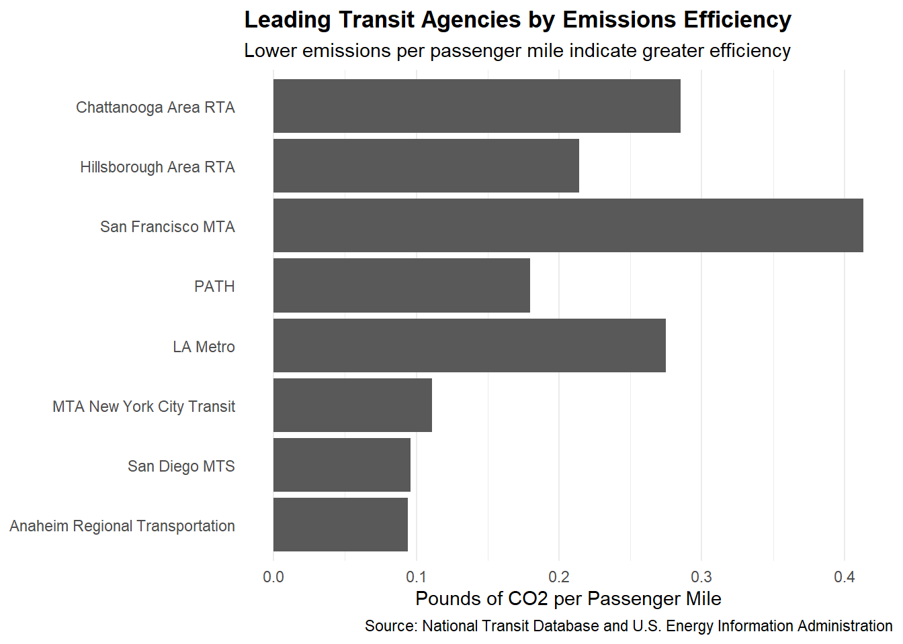

load_ntd_energy <-function(){library(readxl)library(httr2)library(tidyverse)library(fs)# Create 'data/mp02' directory if not already present DATA_DIR <- fs::path("data", "mp02") fs::dir_create(DATA_DIR, recurse=TRUE) NTD_ENERGY_FILE <- fs::path(DATA_DIR, "2025_ntd_energy.xlsx")if(!fs::file_exists(NTD_ENERGY_FILE)){library(httr2)request("https://www.transit.dot.gov/") |>req_url_path("sites","fta.dot.gov","files","2026-09","2025 Energy Consumption_260806.xlsx") |>req_headers(`User-Agent`="Mozilla/5.0 (Macintosh; Intel Mac OS X 10.15; rv:149.0) Gecko/20100101 Firefox/149.0") |>req_perform(NTD_ENERGY_FILE) }if(file.info(NTD_ENERGY_FILE)$size <1e4){cat("I was unable to download the NTD Energy File. Please try again.\n")stop("Download failed. Please delete the corrupted file by running `unlink('data/mp02/2025_ntd_energy.xlsx')` and try again.") } to_numeric_fill_0 <-function(x){ x <-if_else(x =="-", NA, x)replace_na(as.numeric(x), 0) }read_excel(NTD_ENERGY_FILE) |>select(-c(`Reporter Type`,`Reporting Module`,`Gallons of Other Fuel`,`Other Fuel Description`)) |>mutate(across(-c(`Agency Name`,`Mode`,`TOS`), to_numeric_fill_0)) |>group_by(`NTD ID`, `Mode`, `Agency Name`) |>summarize(across(where(is.numeric), sum),.groups ="keep") |>mutate(ENERGY =sum(c_across(c(where(is.numeric))))) |>filter(ENERGY >0) |>select(-ENERGY) |>ungroup()}NTD_ENERGY <-load_ntd_energy()
Warning: There was 1 warning in `mutate()`.
ℹ In argument: `across(-c(`Agency Name`, Mode, TOS), to_numeric_fill_0)`.
Caused by warning in `replace_na()`:
! NAs introduced by coercion
Task 1c: Transit Service Provided
load_ntd_service <-function(){library(httr2)library(tidyverse)library(fs)# Create 'data/mp02' directory if not already present DATA_DIR <- fs::path("data", "mp02") fs::dir_create(DATA_DIR, recurse=TRUE) NTD_SERVICE_FILE <- fs::path(DATA_DIR, "2025_ntd_service.csv")if(!fs::file_exists(NTD_SERVICE_FILE)){library(httr2)request("https://data.transportation.gov/resource/4fir-qbim.csv") |>req_url_query(`$query`=paste("SELECT `_5_digit_ntd_id` AS `NTD_ID`","`max_agency` AS `AGENCY`","`max_reporter_type` AS `reporter_type`","`max_organization_type` AS `organization_type`","`max_city` AS `city`","`max_state` AS `state`","`mode`","`type_of_service`","`max_primary_uza_code` as `uza_code`","`max_primary_uza_name` as `uza_name`","`max_primary_uza_area_sq_miles` as `uza_sq_miles`","`max_primary_uza_population` as `uza_population`","`max_service_area_sq_miles` as `service_area_sq_miles`","`max_service_area_population` as `service_area_population`","`questionable_record` as `flagged_likely_inaccurate`","`sum_unlinked_passenger_trips_upt` as `total_upt`","`sum_passenger_miles` WHERE caseless_one_of(`report_year`, '2025') limit 50000",sep="," )) |>req_headers(`User-Agent`="Mozilla/5.0 (Macintosh; Intel Mac OS X 10.15; rv:149.0) Gecko/20100101 Firefox/149.0") |>req_perform(NTD_SERVICE_FILE) }if(file.info(NTD_SERVICE_FILE)$size <1e4){cat("I was unable to download the NTD Service File. Please try again.\n")stop("Download failed. Please delete the corrupted file by running `unlink('data/mp02/2025_ntd_service.xlsx')` and try again.") }read_csv(NTD_SERVICE_FILE) |>mutate(flagged_likely_inaccurate =!is.na(flagged_likely_inaccurate))}NTD_SERVICE <-load_ntd_service()
Rows: 3762 Columns: 17
── Column specification ────────────────────────────────────────────────────────
Delimiter: ","
chr (11): NTD_ID, AGENCY, reporter_type, organization_type, city, state, mod...
dbl (6): uza_sq_miles, uza_population, service_area_sq_miles, service_area_...
ℹ Use `spec()` to retrieve the full column specification for this data.
ℹ Specify the column types or set `show_col_types = FALSE` to quiet this message.
Green Transit Alliance Announces 2026 Sustainable Transportation Award Winners
When we look at public transit across the country, some systems do a much better job keeping pollution low while getting folks where they need to go. To highlight those standouts, the Green Transit Alliance checked records combining the National Transit Database (NTD) 2025 Energy Consumption dataset, the NTD 2025 Service by Agency dataset, and EIA State Electricity Profiles, paired with standard conversion factors to figure out carbon output. In this study, we measured carbon dioxide against actual passenger service using Unlinked Passenger Trips (UPT) and passenger miles. Simply put, lower emissions mean a system is giving more rides and miles with a lighter footprint on the earth.
Anaheim Regional Transportation Wins the Greenest Transit Agency Award
Anaheim Regional Transportation wins this year’s Greenest Transit Agency Award, putting up great numbers: just 0.132 lb of CO₂ per UPT and 0.0942 lb per passenger mile. That performance won them the top spot for trips and second place per passenger mile among the eligible agency mode records in our final check. To see how good that is, the dataset medians sit much higher at 6.86 lb per UPT and 1.18 lb per passenger-mile, showing just how much cleaner Anaheim’s day to day runs are compared to the typical agency.
greenest_ranking |>slice_head(n =10) |>mutate(agency_short =case_when(str_detect(AGENCY, "Anaheim") ~"Anaheim Regional Transportation",str_detect(AGENCY, "Los Angeles County") ~"LA Metro",str_detect(AGENCY, "MTA New York City") ~"MTA New York City Transit",str_detect(AGENCY, "San Diego") ~"San Diego MTS",str_detect(AGENCY, "San Francisco") ~"San Francisco MTA",str_detect(AGENCY, "Port Authority Trans-Hudson") ~"PATH",str_detect(AGENCY, "Hillsborough") ~"Hillsborough Area RTA",str_detect(AGENCY, "Chattanooga") ~"Chattanooga Area RTA",TRUE~ AGENCY ),agency_short =reorder( agency_short, emissions_per_passenger_mile ) ) |>ggplot(aes(x = emissions_per_passenger_mile,y = agency_short ) ) +geom_col() +labs(title ="Leading Transit Agencies by Emissions Efficiency",subtitle ="Lower emissions per passenger mile indicate greater efficiency",x ="Pounds of CO2 per Passenger Mile",y =NULL,caption ="Source: National Transit Database and U.S. Energy Information Administration" ) +theme_minimal() +theme(plot.title =element_text(face ="bold"),panel.grid.major.y =element_blank() )

Heavy Rail Named the Greenest Transit Mode
When it comes to moving huge crowds of people efficiently, Heavy Rail stands out as the Greenest Transit Mode. It recorded an estimated 0.157 lb of CO₂ per passenger mile, which is about 67% below the median for all modes studied (0.475 lb). Even better, it hit this efficiency while carrying about 2.82 billion UPT and racking up 11.16 billion passenger miles. It’s a clear sign that high capacity transit can handle heavy crowds without a massive carbon cost per mile.
greenest_mode |>slice_head(n =10) |>mutate(mode =reorder(mode, emissions_per_passenger_mile) ) |>ggplot(aes(x = emissions_per_passenger_mile,y = mode ) ) +geom_col() +labs(title ="Greenest Transit Modes",subtitle ="Transit modes ranked by emissions per passenger mile",x ="Pounds of CO2 per Passenger Mile",y =NULL,caption ="Source: National Transit Database and U.S. Energy Information Administration" ) +theme_minimal() +theme(plot.title =element_text(face ="bold"),panel.grid.major.y =element_blank() )
Carbon estimates lean on regional power grid averages and reported fuel use, meaning local differences in power generation change the figures. Also, our award ranking used a 78,750 UPT eligibility cutoff to focus on active systems, and we specifically left out agency mode records involving biodiesel use so that direct emissions accounting quirks wouldn’t distort the real world comparison.
NoteAI Usage Statement
I used generative AI while working on this project to help me understand some R code and correct errors in my analysis. I also used it to better understand the assignment instructions and how to format parts of my report in Quarto. I ran the code myself, reviewed the results, and made my own decisions about the analysis. I wrote the GTA press release myself based on my analysis and results.